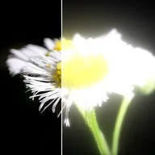

Deep Glow

Een rijke, heldere gloed die zich ver verspreidt: een felle kern bij de laag die vloeiend overgaat in een brede, zachte nevel.
Instellingen
| Instelling | Type | Bereik | Standaard |
|---|---|---|---|
| Straal | Getal | 0 tot 500 | 60 |
| Intensiteit | Getal | 0 tot 10 | 1 |
| Afname | Getal | 0 tot 1 | 0.5 |
| Dekking gloed | Getal | 0% tot 100% | 100% |
| Dekking origineel | Getal | 0% tot 100% | 100% |
| Gloed buiten | Getal | 0% tot 100% | 100% |
| Verzadiging | Getal | -1 tot 1 | 0 |
| Levendigheid | Getal | -1 tot 1 | 0 |
| Kleurtoonverschuiving | Hoek | -360° tot 360° | 0° |
| Tintkleur | Kleur | – | #FF8A3D |
| Tint | Getal | 0% tot 100% | 0% |
| Drempel | Aan of uit | – | Uit |
| Drempel laag | Getal | 0 tot 1 | 0.5 |
| Drempel hoog | Getal | 0 tot 1 | 1 |
| Zachtheid drempel | Getal | 0 tot 1 | 0.1 |